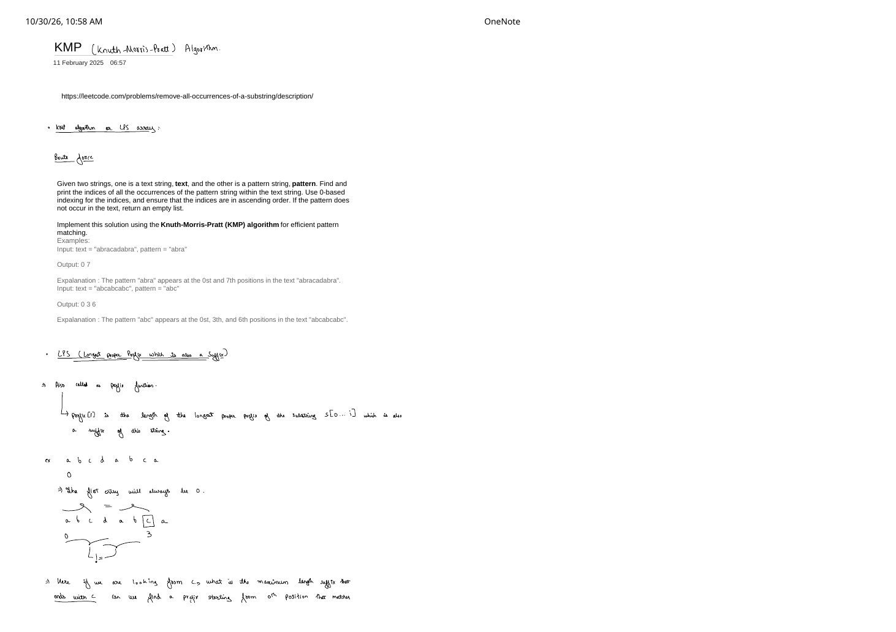
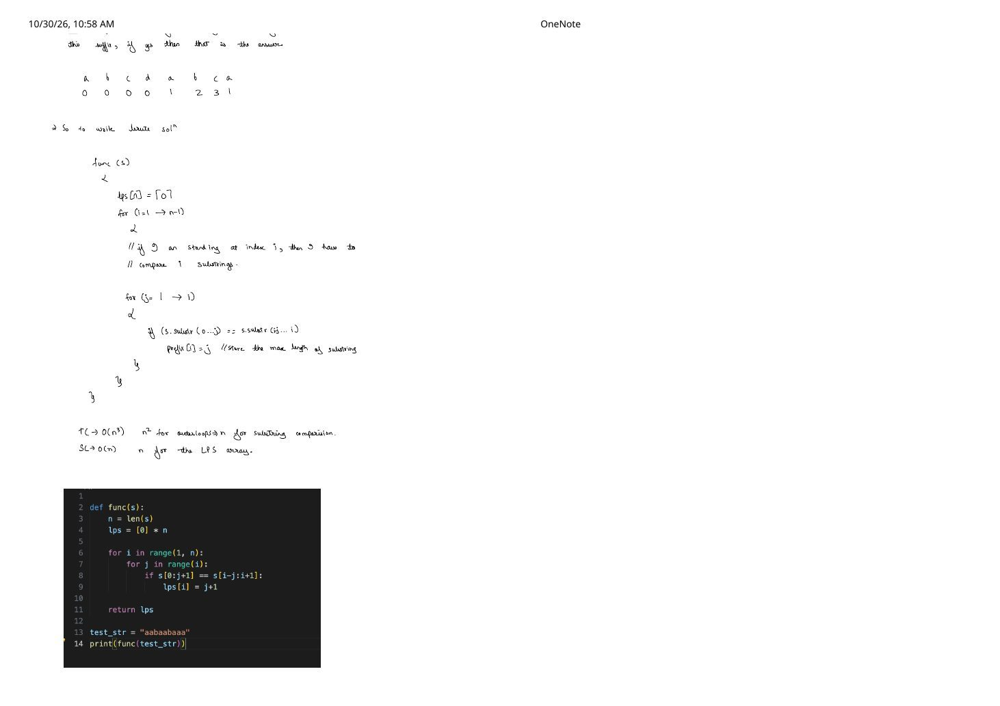
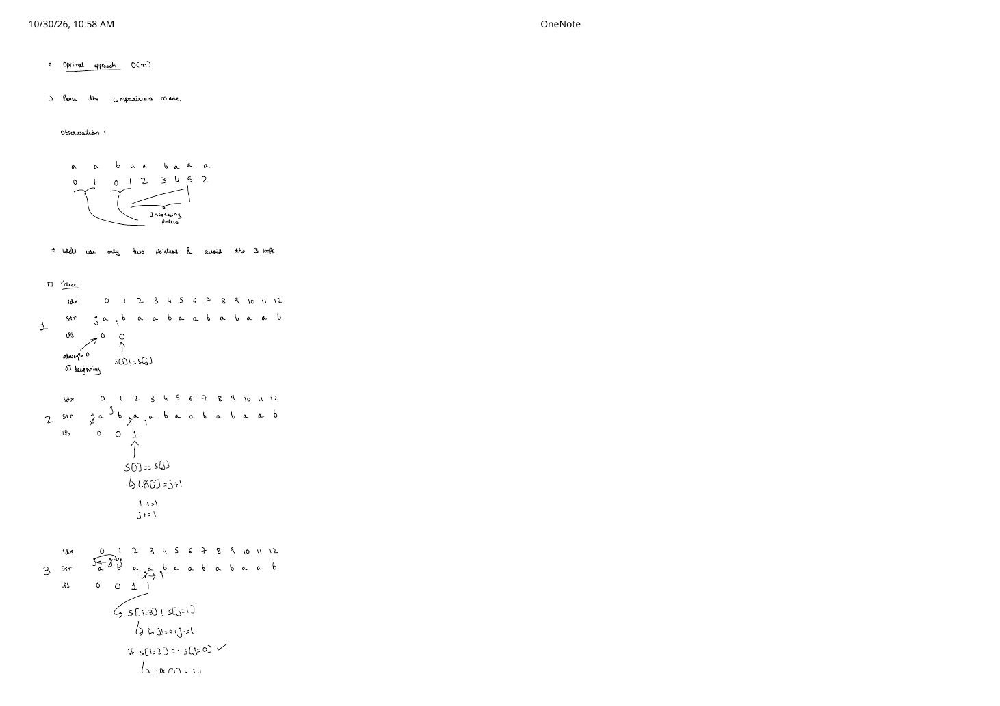
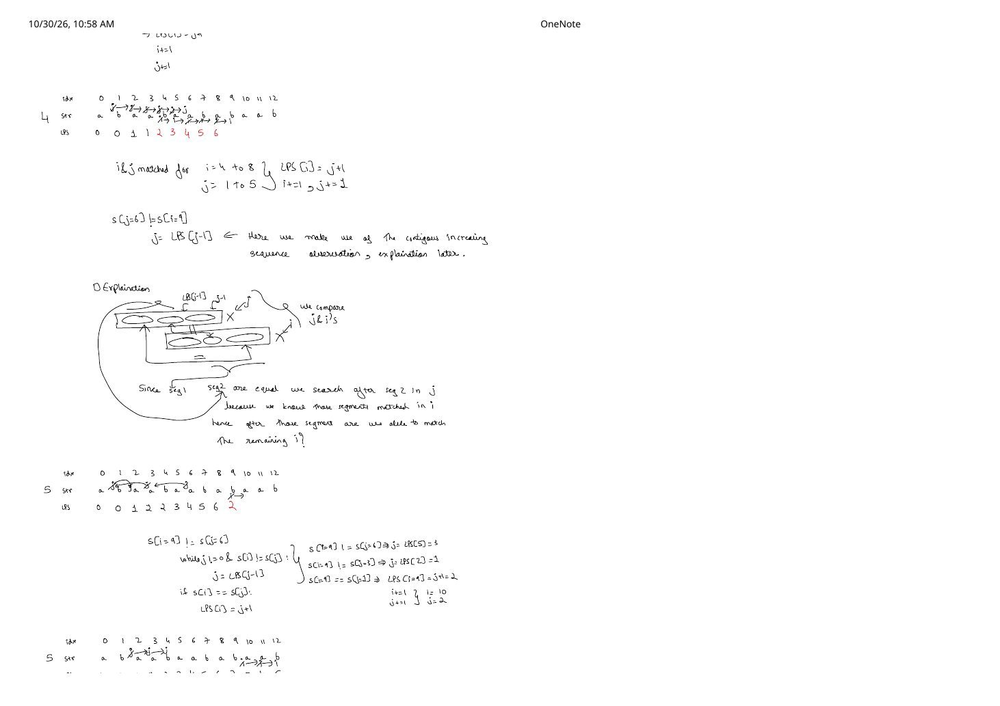
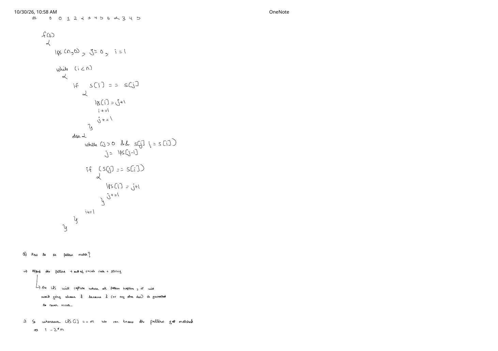
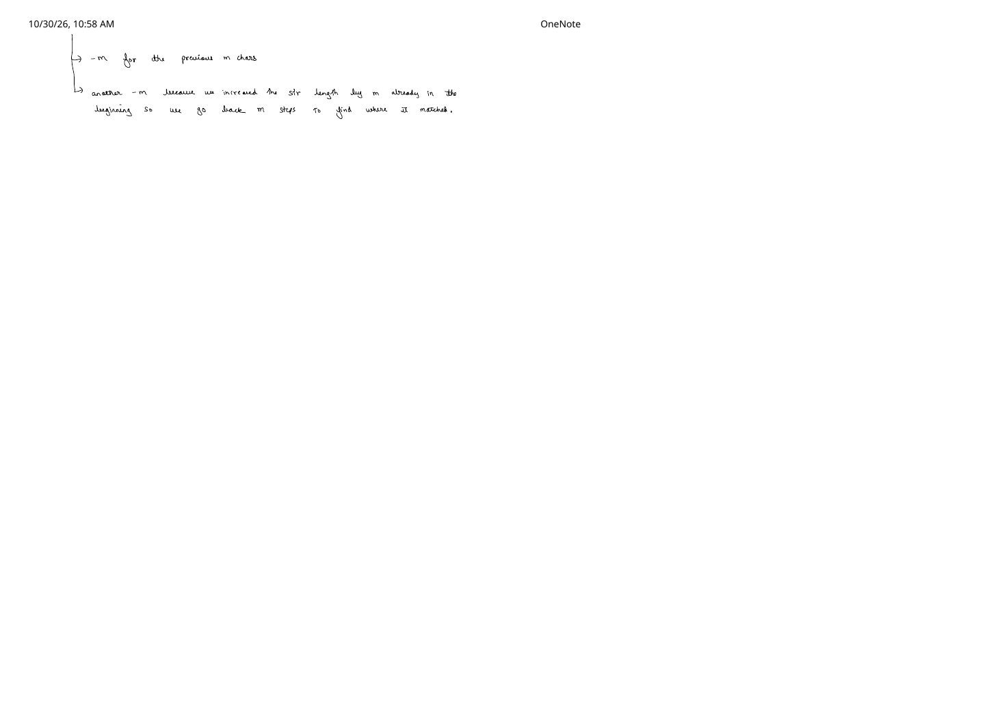

Knuth–Morris–Pratt (KMP) Algorithm & the LPS Prefix Function
Expanded from handwritten competitive coding study notes (01_KMP.pdf, pages 1–6)
Given a text string of length $n$ and a pattern string of length $m$, how do we find all 0-based starting indices where pattern occurs inside text? A naive window check compares up to $m$ characters at every starting offset, degrading to $\mathcal{O}(n \cdot m)$ on repetitive inputs such as searching "aaaab" inside "aaaaaaaaaaaaab". Whenever a mismatch happens at the last character, naive search throws away everything it just learned and backs up the text pointer.
The Knuth–Morris–Pratt (KMP) algorithm eliminates backtracking in text altogether, running in guaranteed $\mathcal{O}(n + m)$ time. Its entire secret lives inside a precomputed array called the LPS array (also known as the prefix function $\pi$).
Problem Statement (Exact String Matching)
Given strings text ($|text| = n$) and pattern ($|pattern| = m$), return all 0-based indices $p$ in ascending order such that $\text{text}[p \dots p + m - 1] = \text{pattern}[0 \dots m - 1]$.
text = "abracadabra",pattern = "abra"$\implies$[0, 7]text = "abcabcabc",pattern = "abc"$\implies$[0, 3, 6]
1. What Is the LPS Array (Prefix Function)?
LPS stands for Longest Proper Prefix which is also a Suffix. In competitive programming literature (such as CP-Algorithms), this exact table is called the prefix function $\pi[i]$.
Formal Definition of $\text{LPS}[i]$
For each index $i \in [0, n - 1]$, $\text{LPS}[i]$ is the maximum length $k$ ($0 \le k \le i$) such that the length-$k$ prefix of $s[0 \dots i]$ equals the length-$k$ suffix of $s[0 \dots i]$:
$$\text{LPS}[i] = \max\{\, k \in \{0, 1, \dots, i\} \;\mid\; s[0 \dots k - 1] = s[i - k + 1 \dots i] \,\}$$Why proper prefix? Because every string $s[0 \dots i]$ trivially equals itself ($k = i + 1$). Requiring $k \le i$ excludes the entire substring $s[0 \dots i]$, which immediately implies $\text{LPS}[0] = 0$ for every string.
Worked Example: Building $\text{LPS}$ by Hand on "abcdabca"
Let us inspect $s = \texttt{"abcdabca"}$ from pages 1–2 of the notes. At each index $i$, we ask: looking backward from $s[i]$, what is the longest suffix ending at $i$ that matches a prefix starting at index $0$?
| Index $i$ | Substring $s[0 \dots i]$ | Matching Proper Prefix & Suffix | $\text{LPS}[i]$ |
|---|---|---|---|
| 0 | a | None (proper prefixes of length 1 are empty) | 0 |
| 1 | ab | "a" $\neq$ "b" | 0 |
| 2 | abc | No prefix starts with c | 0 |
| 3 | abcd | No prefix starts with d | 0 |
| 4 | abcda | "a" ($s[0]$) $=$ "a" ($s[4]$) | 1 |
| 5 | abcdab | "ab" ($s[0..1]$) $=$ "ab" ($s[4..5]$) | 2 |
| 6 | abcdabc | "abc" ($s[0..2]$) $=$ "abc" ($s[4..6]$); length 4 fails since "abcd" $\neq$ "dabc" | 3 |
| 7 | abcdabca | Length 4 fails ("abcd" $\neq$ "abca"), length 3/2 fail, "a" $=$ "a" | 1 |
Thus for $s = \texttt{"abcdabca"}$, the complete LPS array is [0, 0, 0, 0, 1, 2, 3, 1].
2. Brute-Force $\mathcal{O}(n^3)$ LPS Construction
Before optimizing, let us write down the direct brute-force baseline from page 2 of the notes. Standing at index $i$, there are $i$ candidate proper prefix lengths ($1, 2, \dots, i$). Checking whether the prefix of length $L = j + 1$ matches the suffix of length $L$ ending at $i$ takes $\mathcal{O}(L)$ character comparisons.
def compute_lps_brute(s: str) -> list[int]:
n = len(s)
lps = [0] * n
for i in range(1, n):
# Try every proper prefix length (j + 1) from 1 up to i
for j in range(i):
if s[0 : j + 1] == s[i - j : i + 1]:
lps[i] = j + 1 # Keep the maximum matching length
return lps
test_str = "aabaabaaa"
print(compute_lps_brute(test_str)) # [0, 1, 0, 1, 2, 3, 4, 5, 2]- Time Complexity: $\mathcal{O}(n^3)$ — two nested loops give $\mathcal{O}(n^2)$ pairs $(i, j)$, and each slice equality check
s[0:j+1] == s[i-j:i+1]costs up to $\mathcal{O}(n)$. - Space Complexity: $\mathcal{O}(n)$ to store the
lpsarray (plus temporary slice copies in Python).
3. Why Reusing Comparisons Drops $\mathcal{O}(n^3)$ to $\mathcal{O}(n)$
Look closely at the brute-force output on "aabaabaaa" from the top of page 3:
s = a a b a a b a a alps = [0, 1, 0, 1, 2, 3, 4, 5, 2]
Two structural facts jump out immediately:
- Contiguous $+1$ growth on a match: Whenever the next character $s[i]$ matches the character right after the previous longest border ($s[j]$ where $j = \text{LPS}[i - 1]$), $\text{LPS}[i]$ is simply $j + 1$. We never have to re-verify the first $j$ characters! Notice the run
1, 2, 3, 4, 5across indices $3 \dots 7$. - Fallback via segment transitivity on a mismatch: What happens at index $8$ of
"aabaabaaa"(or index $9$ of"abaabaababaab") when $s[i] \neq s[j]$? Instead of resetting $j$ to $0$ or scanning every length from scratch, we jump directly to $j = \text{LPS}[j - 1]$.
The Segment-Equality Diagram: Why j = lps[j - 1] Is Exact
Suppose we are at index $i$, holding a previously matched prefix length $j = \text{LPS}[i - 1] \gt 0$, meaning the first $j$ characters of $s$ already match the $j$ characters immediately before $i$:
$$s[0 \dots j - 1] \;=\; s[i - j \dots i - 1]$$Now we compare $s[j]$ against $s[i]$ and discover a mismatch ($s[j] \neq s[i]$). We want the next longest prefix $s[0 \dots k - 1]$ ($k \lt j$) that still matches the suffix $s[i - k \dots i - 1]$ right before $i$ so that we can test whether $s[k] = s[i]$.
seg2 and seg3) are identical. Since $k = \text{LPS}[j-1]$ makes seg1 == seg2, seg1 automatically matches seg3 without re-checking a single character.4. Step-by-Step Two-Pointer Trace on "abaabaababaab"
Pages 3–5 of the handwritten notes trace the optimal two-pointer algorithm on the 13-character string $s = \texttt{"abaabaababaab"}$ (indices $0 \dots 12$). Notice especially step $i = 9$, where $j$ cascades through two consecutive LPS fallbacks ($6 \to 3 \to 1$) before matching!
| $i$ | $s[i]$ | Initial $j$ | Comparisons & Fallback Actions | $\text{LPS}[i]$ | Next $(i, j)$ |
|---|---|---|---|---|---|
| 0 | a | — | Base case: first entry is always $0$ | 0 | $(1, 0)$ |
| 1 | b | 0 | $s[1](\texttt{'b'}) \neq s[0](\texttt{'a'})$, $j = 0$ cannot fall back further | 0 | $(2, 0)$ |
| 2 | a | 0 | $s[2](\texttt{'a'}) = s[0](\texttt{'a'})$ $\implies \text{LPS}[2] = j + 1 = 1$ | 1 | $(3, 1)$ |
| 3 | a | 1 | $s[3](\texttt{'a'}) \neq s[1](\texttt{'b'})$ $\implies j \leftarrow \text{LPS}[0] = 0$; then $s[3](\texttt{'a'}) = s[0](\texttt{'a'})$ ✓ | 1 | $(4, 1)$ |
| 4 | b | 1 | $s[4](\texttt{'b'}) = s[1](\texttt{'b'})$ ✓ | 2 | $(5, 2)$ |
| 5 | a | 2 | $s[5](\texttt{'a'}) = s[2](\texttt{'a'})$ ✓ | 3 | $(6, 3)$ |
| 6 | a | 3 | $s[6](\texttt{'a'}) = s[3](\texttt{'a'})$ ✓ | 4 | $(7, 4)$ |
| 7 | b | 4 | $s[7](\texttt{'b'}) = s[4](\texttt{'b'})$ ✓ | 5 | $(8, 5)$ |
| 8 | a | 5 | $s[8](\texttt{'a'}) = s[5](\texttt{'a'})$ ✓ (contiguous increasing run $1 \dots 6$) | 6 | $(9, 6)$ |
| 9 | b |
6 |
1) $s[9](\texttt{'b'}) \neq s[6](\texttt{'a'})$ $\implies j \leftarrow \text{LPS}[5] = 3$ 2) $s[9](\texttt{'b'}) \neq s[3](\texttt{'a'})$ $\implies j \leftarrow \text{LPS}[2] = 1$ 3) $s[9](\texttt{'b'}) = s[1](\texttt{'b'})$ ✓ $\implies \text{LPS}[9] = 1 + 1 = 2$ |
2 | $(10, 2)$ |
| 10 | a | 2 | $s[10](\texttt{'a'}) = s[2](\texttt{'a'})$ ✓ | 3 | $(11, 3)$ |
| 11 | a | 3 | $s[11](\texttt{'a'}) = s[3](\texttt{'a'})$ ✓ | 4 | $(12, 4)$ |
| 12 | b | 4 | $s[12](\texttt{'b'}) = s[4](\texttt{'b'})$ ✓ | 5 | $(13, 5)$ |
idx = [ 0, 1, 2, 3, 4, 5, 6, 7, 8, 9, 10, 11, 12]str = a b a a b a a b a b a a bLPS = [ 0, 0, 1, 1, 2, 3, 4, 5, 6, 2, 3, 4, 5]
(Note: If you run the exact same trace on the 13-character variant "abaabaaabaaab", indices $0 \dots 5$ give [0, 0, 1, 1, 2, 3], $i = 6$ falls back $j: 3 \to 1 \to 0$ matching 'a' for 1, and $7 \dots 12$ climb smoothly to [1, 2, 3, 1, 1, 2].)
Why Is the Nested while Loop Still $\mathcal{O}(n)$?
At first glance, having a while (j > 0 && s[j] != s[i]) loop inside while (i < n) looks quadratic. A two-line potential argument proves it is strictly linear:
- In each iteration of the outer loop ($n - 1$ iterations total), pointer $j$ increases by at most $1$ (only when $s[i] = s[j]$).
- Every iteration of the inner fallback
j = lps[j - 1]strictly decreases $j$ by at least $1$ (since $\text{LPS}[j - 1] \le j - 1 \lt j$), and $j$ never becomes negative ($j \ge 0$). - Therefore, across the entire execution, the inner
whileloop can execute at most $n - 1$ times in total! Total character comparisons are bounded by $2n - 2 = \mathcal{O}(n)$.
5. Pattern Matching with KMP: Two Clean Formulations
Method A (From the Notes): Sentinel Concatenation pattern + '$' + text
Pages 5–6 of the handwritten notes use an elegant competitive-programming trick: concatenate
$$\text{combined} = \text{pattern} + \texttt{'\textdollar'} + \text{text}$$where '$' (or '#') is an out-of-vocabulary separator guaranteed never to appear in pattern or text, and compute the LPS array on combined (total length $m + 1 + n$).
- Because
'$'at index $m$ never appears anywhere else, no $\text{LPS}[i]$ can ever cross $m$ ($\text{LPS}[i] \le m$ for all $i$). - Whenever $\text{LPS}[i] = m$ (for $i \gt m$), the length-$m$ suffix ending at index $i$ in
combinedequals the length-$m$ prefix ofcombined— which ispattern!
Why Does a Match at Index $i$ Start at $i - 2m$ in text?
Suppose $\text{LPS}[i] = m$ in $\text{combined} = \underbrace{\text{pattern}}_{m}\underbrace{\texttt{'\textdollar'}}_{1}\underbrace{\text{text}}_{n}$:
- Step back across the match ($-m + 1$): A match of length $m$ ending at index $i$ begins at index $i - m + 1$ inside
combined. - Subtract the prepended prefix shift ($-(m + 1)$): Index $0$ of
textsits at index $m + 1$ ofcombined. Shifting back to 0-basedtextcoordinates subtracts $m + 1$:
Quick sanity check on pattern = "abra" ($m = 4$), text = "abracadabra": in "abra$abracadabra", the first match ends at $i = 8 \implies 8 - 2(4) = 0$, and the second ends at $i = 15 \implies 15 - 2(4) = 7$!
Method B: Standard Two-Pointer KMP ($\mathcal{O}(m)$ Space, No Separator Needed)
If strings can contain arbitrary bytes (so no safe sentinel character exists) or if $n$ is huge (e.g., streaming $10^7$ characters for a 100-byte pattern), we only build lps on pattern ($\mathcal{O}(m)$ memory) and scan text with pointer $i$ and pattern with pointer $j$. Whenever $j = m$, we record $i - m$ (after advancing) and immediately fall back $j = \text{lps}[j - 1]$ to catch overlapping occurrences!
Complete Implementations (C++ & Python)
#include <bits/stdc++.h>
using namespace std;
// Optimal O(n) LPS / Prefix-Function builder (exact logic from Page 5)
vector<int> computeLPS(const string& s) {
int n = static_cast<int>(s.size());
vector<int> lps(n, 0);
int j = 0, i = 1;
while (i < n) {
if (s[i] == s[j]) {
lps[i] = j + 1;
i++;
j++;
} else {
while (j > 0 && s[j] != s[i]) {
j = lps[j - 1];
}
if (s[j] == s[i]) {
lps[i] = j + 1;
j++;
}
i++;
}
}
return lps;
}
// Method A: Sentinel concatenation pattern + '$' + text -> O(n + m) time & space
vector<int> kmpSearchSentinel(const string& text, const string& pattern) {
if (pattern.empty()) return {};
int m = static_cast<int>(pattern.size());
string combined = pattern + '$' + text;
vector<int> lps = computeLPS(combined);
vector<int> matches;
for (int i = m + 1; i < static_cast<int>(combined.size()); i++) {
if (lps[i] == m) {
matches.push_back(i - 2 * m);
}
}
return matches;
}
// Method B: Standard two-pointer KMP search -> O(n + m) time, O(m) space
vector<int> kmpSearchTwoPointer(const string& text, const string& pattern) {
if (pattern.empty()) return {};
int n = static_cast<int>(text.size());
int m = static_cast<int>(pattern.size());
vector<int> lps = computeLPS(pattern);
vector<int> matches;
int j = 0; // matched length in pattern
for (int i = 0; i < n; i++) {
while (j > 0 && pattern[j] != text[i]) {
j = lps[j - 1];
}
if (pattern[j] == text[i]) {
j++;
}
if (j == m) {
matches.push_back(i - m + 1);
j = lps[j - 1]; // allow overlapping matches!
}
}
return matches;
}def compute_lps(s: str) -> list[int]:
n = len(s)
lps = [0] * n
j = 0
for i in range(1, n):
while j > 0 and s[j] != s[i]:
j = lps[j - 1]
if s[j] == s[i]:
j += 1
lps[i] = j
return lps
def kmp_search(text: str, pattern: str) -> list[int]:
"""Two-pointer KMP search in O(n + m) time and O(m) auxiliary space."""
if not pattern:
return []
lps = compute_lps(pattern)
m = len(pattern)
matches: list[int] = []
j = 0
for i, ch in enumerate(text):
while j > 0 and pattern[j] != ch:
j = lps[j - 1]
if pattern[j] == ch:
j += 1
if j == m:
matches.append(i - m + 1)
j = lps[j - 1]
return matchesCommon KMP Pitfalls to Avoid
- Writing
j = lps[j]instead ofj = lps[j - 1]: Because $j$ is the 0-based index of the mismatched character, the already-matched prefix covers indices $0 \dots j - 1$. Indexinglps[j]reads an uncomputed entry (or causes an infinite loop!). - Choosing a sentinel character that can appear in the input: If
'$'appears insidetext, $\text{LPS}[i]$ can exceed $m$ and corrupt indices. Either pick an guaranteed non-alphabet byte (like'\0') or use Method B. - Resetting
j = 0after a full match: Ontext = "ababa",pattern = "aba", resetting $j = 0$ after index $2$ misses the overlapping match starting at index $2$! Always transition viaj = lps[j - 1].
6. Complexity Summary
| Approach | Time Complexity | Auxiliary Space | Notes |
|---|---|---|---|
| Brute-Force LPS + Naive Search | $\mathcal{O}(m^3 + n \cdot m)$ | $\mathcal{O}(m)$ | Re-slices prefixes from scratch on every mismatch |
KMP via Sentinel P + '$' + T |
$\mathcal{O}(n + m)$ | $\mathcal{O}(n + m)$ | Shortest contest implementation (~15 lines); needs unused delimiter |
| KMP via Two-Pointer Streaming | $\mathcal{O}(n + m)$ | $\mathcal{O}(m)$ | Alphabet-independent; ideal when $n \gg m$ or input is streamed |
From the Handwritten Notes
Expand the original handwritten pages below to inspect the exact derivations, dry runs, and annotations:
View original note — Page 1: Problem statement & LPS definition on abcdabca


01_KMP.pdf: Exact string matching examples and prefix-function intuition on abcdabca.View original note — Page 2: Full LPS of abcdabca & $\mathcal{O}(n^3)$ brute-force Python code


01_KMP.pdf: Brute-force substring comparison loop, $\mathcal{O}(n^3)$ complexity, and Python snippet on aabaabaaa.View original note — Page 3: Contiguous growth observation & steps 1–3 of two-pointer trace


01_KMP.pdf: Reusing comparisons on aabaabaaa and starting the two-pointer trace on abaabaababaab.View original note — Page 4: Segment-equality diagram & multi-step fallback at $i = 9$


01_KMP.pdf: Visual proof of j = LPS[j - 1] via seg1 == seg2 and cascading fallback $6 \to 3 \to 1$ at $i = 9$.View original note — Page 5: Complete $\mathcal{O}(n)$ LPS pseudocode & pattern + '$' + text setup


01_KMP.pdf: Final LPS array [0,0,1,1,2,3,4,5,6,2,3,4,5], optimal f(s) loop, and sentinel matching setup.View original note — Page 6: Derivation of the $i - 2m$ match index


01_KMP.pdf: Why subtracting $m$ twice maps a sentinel-string match end back to the 0-based start index in text.